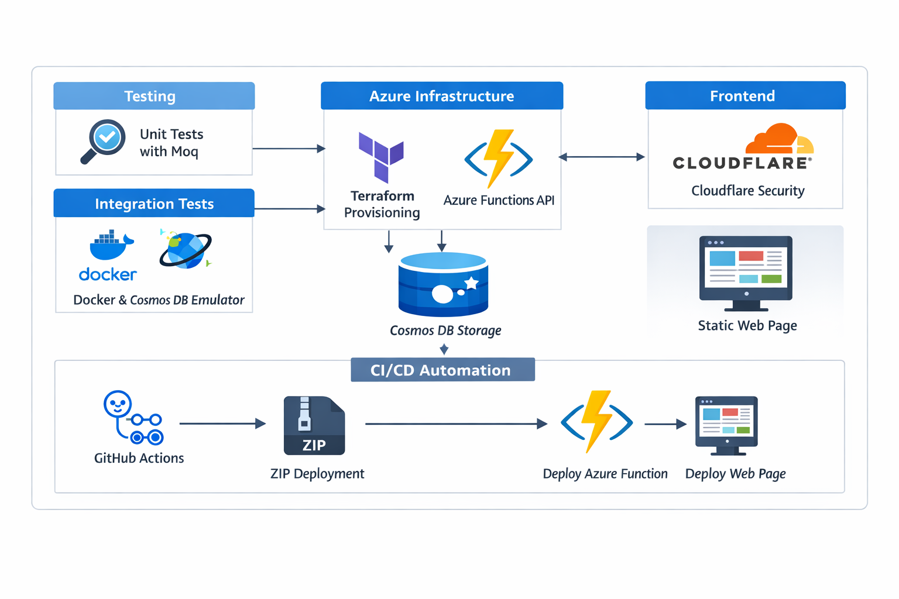

- Cloud Engineer specializing in Azure serverless architecture, Infrastructure as Code, and CI/CD automation.
- Experienced in building production-ready applications using Azure Functions, Cosmos DB, and Terraform.
- Proficient in automated testing strategies including unit, integration, and smoke testing.
- Focused on reliable deployments, secure edge delivery, and scalable cloud-native design.
Cloud
Azure Functions (Serverless API)
Azure Cosmos DB
Azure Storage
Static Web Hosting
Infrastructure & DevOps
Terraform (Infrastructure as Code)
GitHub Actions (CI/CD)
YAML Deployment Pipelines
Docker (CosmosDB Emulator)
Cloudflare (DNS & Security)
Testing
xUnit
Moq (Unit Testing)
Integration Testing
Smoke Testing
CosmosDB Emulator

Designed and deployed a serverless cloud resume application using an Azure Functions API with Cosmos DB for persistent storage and a static web frontend. Infrastructure is fully provisioned using Terraform and deployments are automated through GitHub Actions CI/CD pipelines.
- Backend API built with Azure Functions and integrated with Cosmos DB
- Infrastructure provisioned using Terraform (Infrastructure as Code)
- Automated CI/CD deployments via GitHub Actions using YAML pipelines
- Unit testing with xUnit and Moq
- Integration testing using Cosmos DB Emulator (Docker)
- Smoke tests to validate production API endpoints
- Frontend protected and delivered securely through Cloudflare
- Unit testing with xUnit using dependency mocking via Moq
- Integration testing using Dockerized Cosmos DB Emulator
- Smoke tests validating deployed Azure Function API endpoints
- Local development parity with production database behavior
- Designed using a layered architecture with dependency injection to reduce coupling and improve testability.
- Repository pattern used to abstract Cosmos DB, enabling flexibility in swapping or mocking data stores.
- Separation of concerns between Function, Service, Repository, and Infrastructure layers.
- Testing strategy built around isolation, with unit, integration, and smoke tests to clearly separate logic from infrastructure issues.
- Infrastructure structured using modular Terraform design (Core, Compute, Data, Security) to improve maintainability and scalability.
- Terraform-managed Azure infrastructure
- Provisioning of Cosmos DB, Storage Accounts, and Function App
- Environment configuration and resource dependencies defined in code
- Repeatable infrastructure deployments across environments
- GitHub Actions workflows triggered on repository changes
- YAML-based pipelines for automated build and deployment
- Zip deployment of Azure Function backend
- Automated frontend deployment for static website hosting
- Cloudflare DNS and HTTPS protection for frontend delivery
- Secure routing between frontend and Azure Function API
- Separation of infrastructure, application code, and deployment workflows
2024-2027
Validated competency in cloud and infrastructure security, including identity management, risk mitigation, and secure architecture design within Azure-based serverless environments and security-first IaC practices.
2025-2026
Demonstrated expertise in managing Azure identities, governance, storage, compute, and virtual networking, applied to production-grade serverless architectures, Infrastructure as Code, and automated deployment pipelines.
2009 - 2013
Southern Polytechnic University
Foundation in distributed systems, systems design, and scalable application architecture, applied to production-grade cloud-native solutions.
Email
skolwaite@gmail.com
Phone
+1 ((770) 855 1034)
GitHub
github.com/DrQ-14/CloudResumeSDK
LinkedIn
linkedin.com/in/spencer-kolwaite/